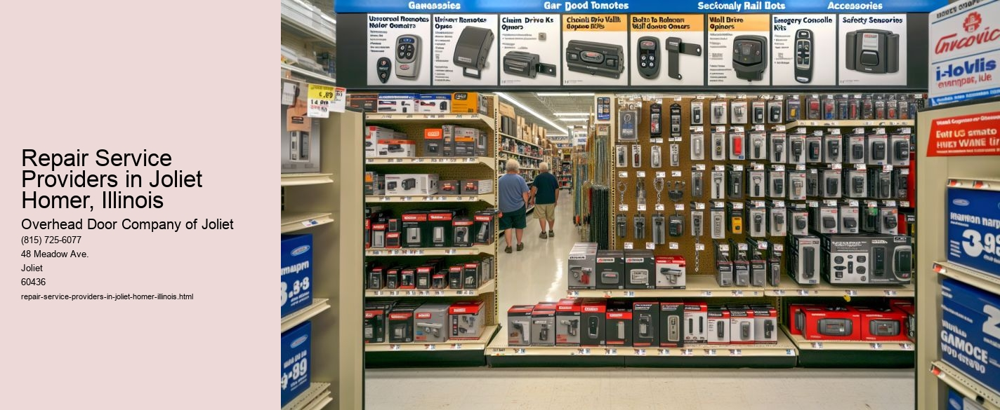

Serving Joliet, IL and surrounding Will County communities including:
Authorized Dealer for Overhead Door™ Openers and Accessories.

Repair service providers in Joliet and Homer, Illinois, play a pivotal role in maintaining the functionality and longevity of various household and commercial items. These professionals offer a wide range of services that cater to the diverse needs of the community, ensuring that daily disruptions are minimized and life continues smoothly. This essay explores the significance, variety, and impact of repair service providers in these areas.
To begin with, the importance of repair service providers cannot be overstated. In todays fast-paced world, people rely heavily on technology and machinery to perform everyday tasks. From household appliances like refrigerators and washing machines to essential systems such as heating and cooling units, any malfunction can disrupt daily routines and cause significant inconvenience. Repair service providers step in to address these challenges, offering timely and effective solutions that restore normalcy to homes and businesses alike.
In Joliet and Homer, Illinois, the array of repair services available is extensive.
Moreover, the presence of automotive repair shops is indispensable in these communities. With many residents relying on their vehicles for commuting and daily activities, keeping cars in optimal condition is crucial. Local mechanics offer services ranging from routine maintenance to complex engine repairs, ensuring that vehicles remain reliable and safe on the road.
Beyond the practical benefits, repair service providers contribute significantly to the local economy. By offering employment opportunities and supporting local businesses, they play a crucial role in economic development.
Another essential aspect of repair service providers in Joliet and Homer is their commitment to customer service. Many of these professionals understand the stress and urgency associated with malfunctioning equipment and strive to offer prompt and courteous service.
In conclusion, repair service providers in Joliet and Homer, Illinois, are indispensable to the community. They offer a wide range of essential services that keep households and businesses running smoothly, contribute to the local economy, and promote sustainable practices. Their expertise and dedication to customer service ensure that residents can rely on them when things go awry, making them a vital component of the local infrastructure. As technology continues to evolve and new challenges arise, the role of repair service providers will remain crucial in maintaining the quality of life for the people of Joliet and Homer.
Common Garage Door Opener Issues Homer, Illinois